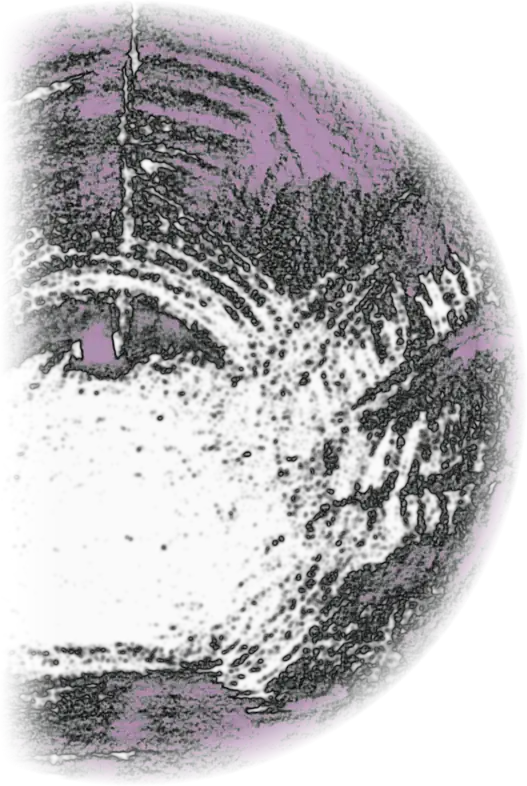
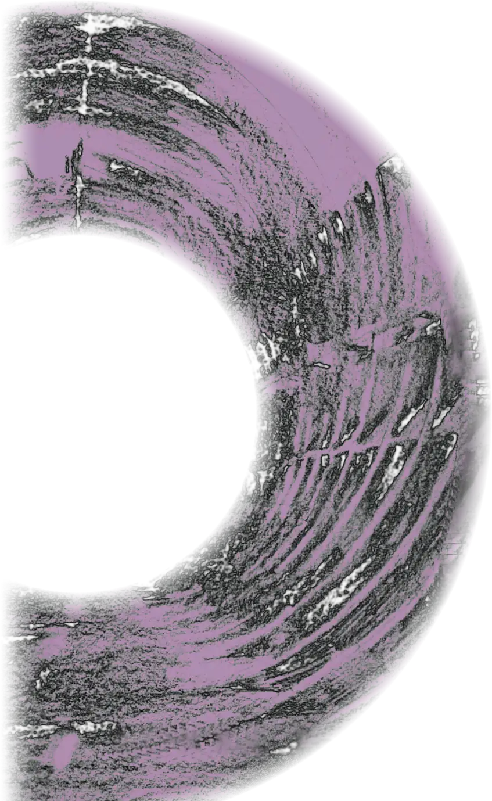
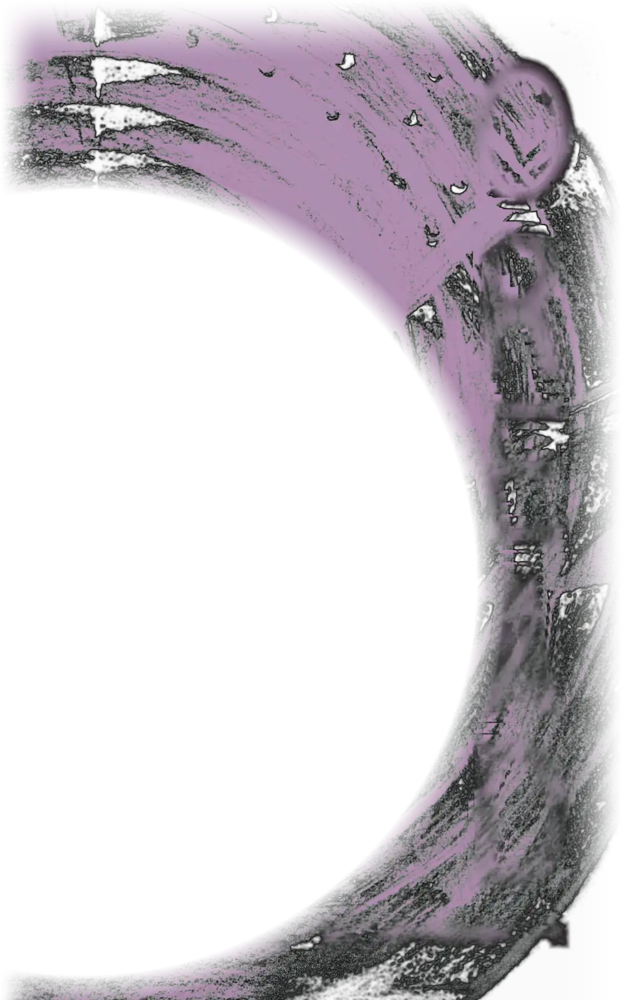
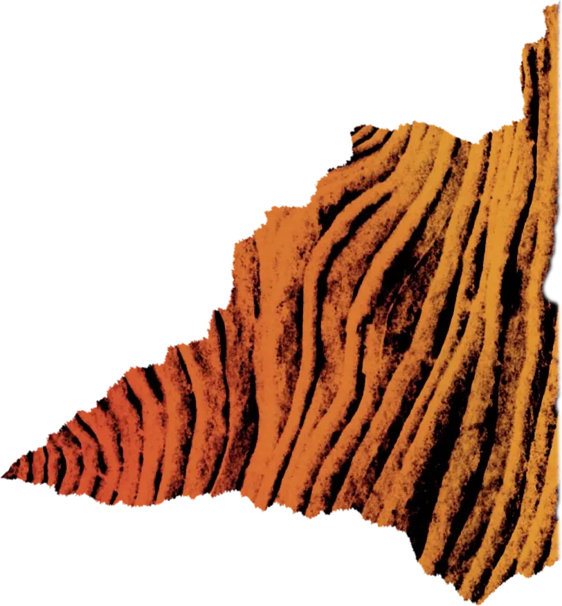
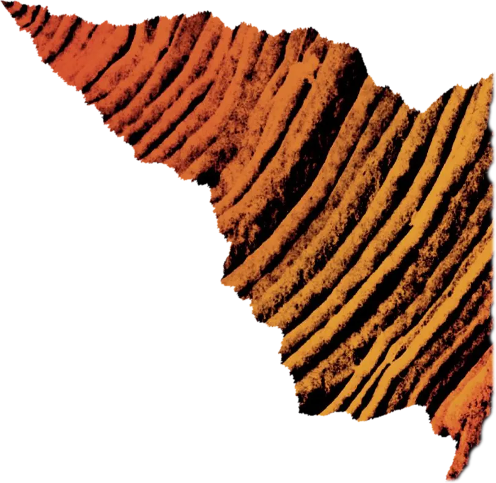
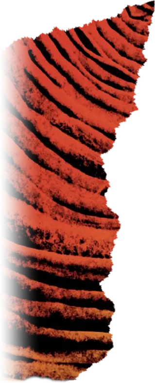
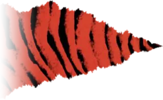
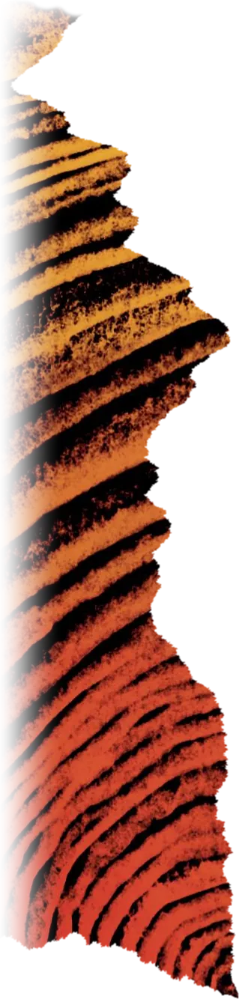

Oread
Lorna Robinson
Hamadryad. A national programme to restore ancient traditions by pairing trees with humans.
Two hundred years have passed
Oread. Deep in the tunnels beneath London, a community has been growing which rejects the Charter.
The world beneath the trees
Two hundred years have passed since the UK government instituted a bold new programme to pair every citizen with a tree. Known as the Hamadryad Charter, it created vast national forests, major civic festivals and a whole new system of personal names.
Deep in the tunnels beneath London, a community has been growing which rejects the Charter. Tensions between the two societies are rising sharply. When a lone Hamadryad finds his way into the underground, a terrible tragedy threatens to unfold.
Oread is the sequel to Hamadryad, but can be read as a standalone novel.
Hardback, paperback and ebook.
Where it began
In a climate-ravaged future UK, the Green Party is elected, and their bold young leader institutes a national programme to restore ancient traditions by pairing trees with humans. From huge civic festivals to different personal names, a new framework is put in place overnight.
In the aftermath of this new world, a small community forms in the abandoned tunnels of the London Underground which questions the changes, while others embrace the new order with a cult-like intensity.
Illustrated by Lydia Hall. Hardback, paperback and ebook.
"… a smart updating of classical hamadryads or tree-spirits."
Professor Stephen Harrison, Professor of Latin Literature, University of Oxford
The tunnels are calling
-
Sat 14 Nov
Oread launch and mystery artefact trail
2.30 to 5pm at Cheney School, Oxford. Arrive any time at main reception and follow the trail through tunnel-like corridors in the Rumble Museum to the Iris Classics Centre: drinks, books, chat, creative writing for anyone who wants a go, and maybe a reading. Tunnel travellers of all ages are welcome.
lro@cheneyschool.org -
Sun 22 Nov
Oxford Indie Book Fair, table S33
Oread and Hamadryad on the table.
oxfordindiebookfair.co.uk
The next dates go on the Events page as they are booked. The Classics and Creative Writing Café meets every month.
Also on the shelf
-
The Birder
An Ovid-inspired novel set in an alternate Oxford where people transform instead of dying.
Illustrated with linocut prints of birds around the city of Oxford.
The Birder -
Flower Gatherers
A Minoan-inspired novel exploring themes of motherhood, growing up, and what can really be known about the distant past.
Key chapters are set in the Ashmolean Museum's Aegean World Gallery, with illustrations by Lydia Hall.
Flower Gatherers -
Telling Tales in Nature
A collection of myths retold from the perspective of the spirits of plants.
All four books in one: Underworld Tales, Forest Tales, Orchard Tales and Meadow Tales, with illustrations by Lydia Hall.
Telling Tales in Nature


Hello, I'm Lorna
My fascination with myths and stories began with The Usborne Book of Greek Myths and Legends and Ulysses 31. Some years later, I studied Classics at Lady Margaret Hall, Oxford. A chance encounter with a Gabriel García Márquez novel in my finals year made me curious about how much it shared with Ovid, and that curiosity became a doctorate on magical realism at University College London.
In 2006 I started a charity called the Iris Project and Iris magazine to bring Classics into state schools. I now run Latin and Greek projects in schools across the UK, the Iris Classics Centre, and the Rumble Museum at Cheney School.
Come and write with us
The Classics and Creative Writing Café meets once a month, at the Iris Classics Centre at Cheney School or St Alban's Church on Charles Street, Oxford.
Bring an idea, have a go at writing, or just read and chat. Each session has a classical theme as a prompt, all genres are welcome, and it's for ages 14 to adult. There are drinks and snacks (donations towards costs are welcome). Come once or come every month.